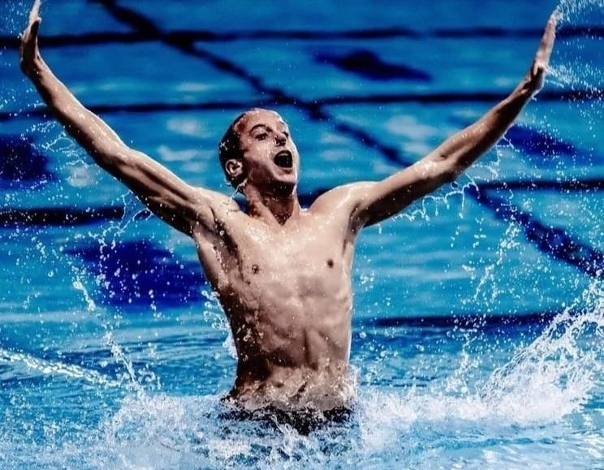
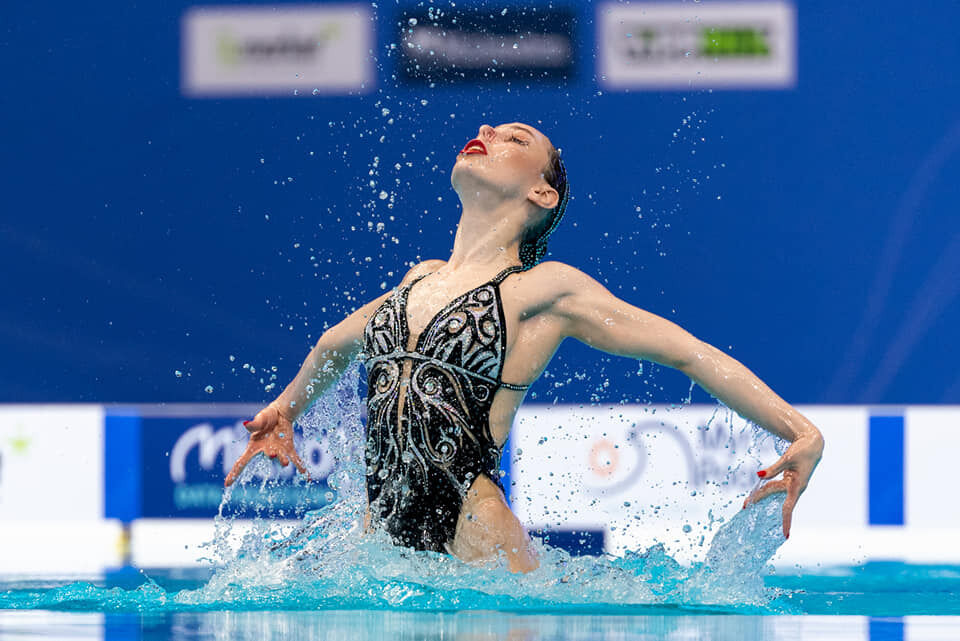
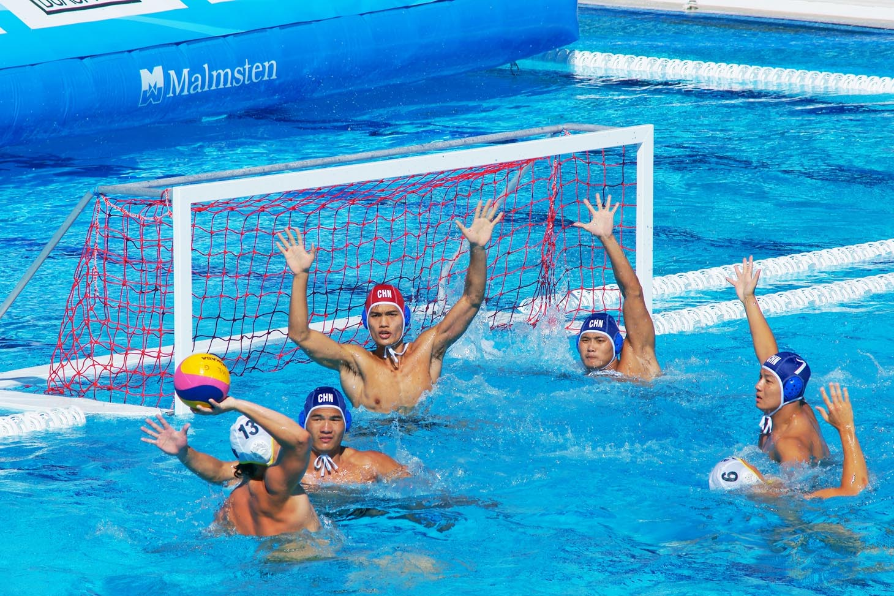
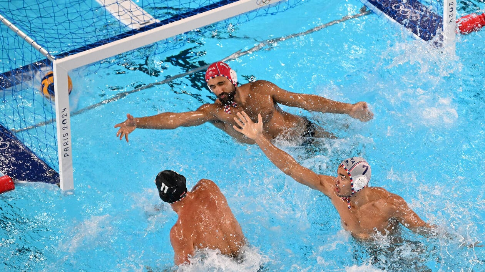
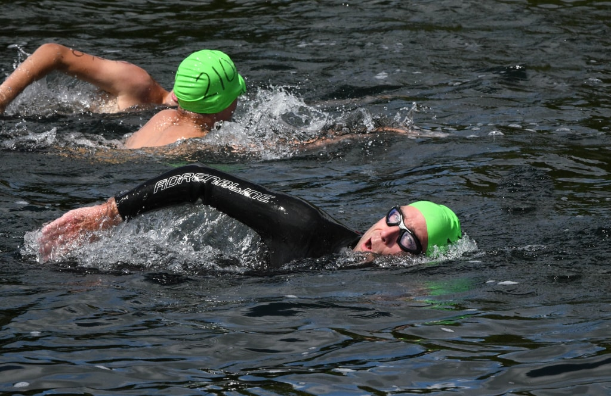
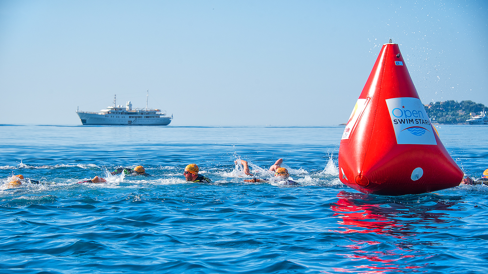
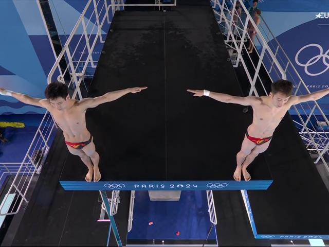
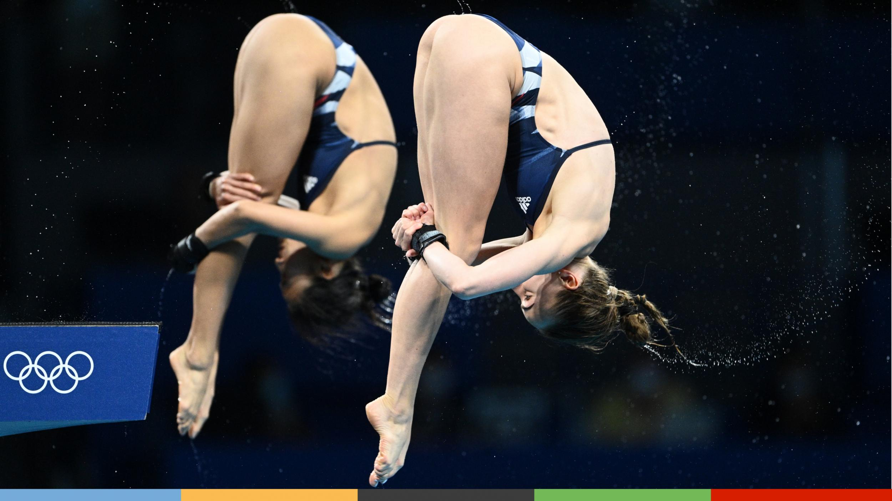

Lorsqu’on parle de natation, l’image qui vient spontanément à l’esprit est celle des compétitions de course en bassin, avec leurs départs fulgurants et leurs arrivées au centième de seconde près. Pourtant, la natation ne se limite pas à cette seule discipline. La Fédération Française de Natation (FFN) supervise un ensemble beaucoup plus vaste d’activités aquatiques, parmi lesquelles la natation synchronisée (désormais appelée natation artistique) qui mêle grâce, coordination et performance, ainsi que le water-polo, un sport d’équipe intense et stratégique, souvent méconnu du grand public.
Longtemps appelée natation synchronisée, la natation artistique est une discipline exigeante qui allie natation, danse et gymnastique. Elle demande non seulement une excellente condition physique, mais aussi une grande maîtrise de la respiration, car les nageuses passent de longues secondes sous l’eau tout en exécutant des mouvements complexes avec une parfaite coordination. Les chorégraphies, accompagnées de musique, sont minutieusement travaillées pour offrir un spectacle visuellement harmonieux et techniquement irréprochable. Cette discipline, encadrée en France par la Fédération Française de Natation (FFN), valorise autant l’expression artistique que la performance athlétique. Elle requiert un esprit d’équipe fort, une synchronisation millimétrée, et une élégance constante, même dans l’effort intense.




Souvent méconnu du grand public, le water-polo est pourtant l’un des sports les plus complets et intenses pratiqués dans l’eau. Il oppose deux équipes de sept joueurs, qui s’affrontent dans un bassin, avec pour objectif de marquer des buts dans le camp adverse. Ce sport demande des qualités physiques impressionnantes : endurance, force, rapidité, et agilité sont indispensables pour tenir dans un match rythmé par des contacts physiques et des sprints incessants. Le tout, sans jamais toucher le fond du bassin. Encadré en France par la FFN, le water-polo est une discipline stratégique, où l’esprit d’équipe et la communication sont essentiels. C’est un sport spectaculaire, qui gagne à être connu pour son intensité et l’engagement total qu’il exige de ses joueurs.
Contrairement à la natation en piscine, l’eau libre se pratique en milieu naturel : mers, lacs ou rivières. Les épreuves se déroulent sur de longues distances, allant de 5 à 25 kilomètres, parfois même davantage pour les ultra-nageurs. C’est une discipline qui demande une endurance exceptionnelle, une grande résistance mentale et une bonne capacité à s’adapter aux éléments : courants, vagues, température de l’eau, ou encore visibilité réduite. Gérée en France par la Fédération Française de Natation (FFN), l’eau libre attire de plus en plus d’adeptes, aussi bien chez les professionnels que les amateurs de défis. Elle offre une expérience unique, entre dépassement de soi et immersion dans la nature.




Le plongeon est une discipline spectaculaire qui allie technique, élégance et courage. Les athlètes sautent d’un tremplin (1 ou 3 mètres) ou d’une plateforme (jusqu’à 10 mètres) pour réaliser en quelques secondes des figures acrobatiques dans les airs, avant d’entrer dans l’eau avec le moins d’éclaboussures possible. Chaque saut est noté en fonction de sa difficulté, de l’exécution et de la qualité de l’entrée dans l’eau. Cette discipline, encadrée par la FFN, exige à la fois une grande force musculaire, une coordination parfaite, une excellente proprioception et une forte capacité de concentration. Le plongeon est aussi un sport artistique, où chaque mouvement compte, du départ à la touche finale.